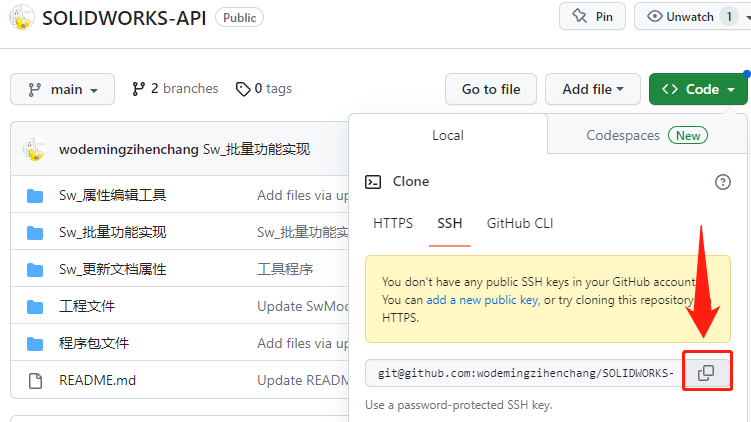
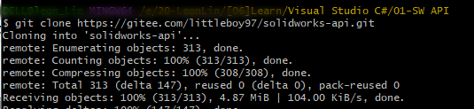
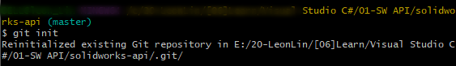
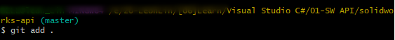
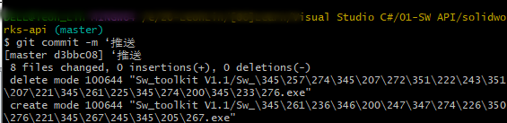
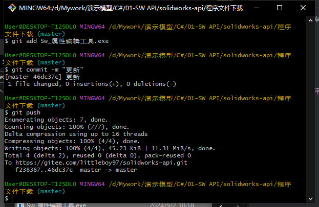
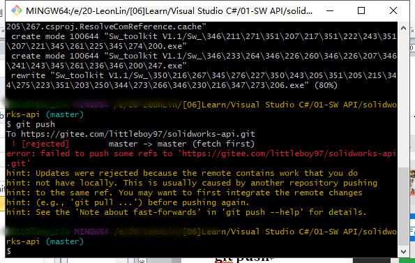

如何向 gitHub 仓库更新内容
首先你需要在 github 上先有一个仓库，通过 git 命令向远程仓库推送更新。如果你已有克隆本地仓库可从（第2步） git init 初始化开始
git clone
1、 git clone https://github.com/\...，这个路径可以点击进入仓库，在仓库的这一部分复制即可：
2、命令行窗口出现这样的通知就说明克隆成功，同时你的文件夹内会多一个名字为远程仓库名字的文件夹：
3、向文件夹中添加要更新的文件，在命令行中将工作目录切换到克隆到本地的仓库下：
（操作更新文件中）……
cd 仓库名
4、cd 仓库名

git init
5、 使用 git init 进行初始化：
git add .
6、使用 git add . 放入缓存区：
git commit -m ‘评论’
7、加入完毕后，使用 git commit -m ‘（评论内容）’放入 git 管理器：
git push
8、最后输入 git push
完成推送，刷新网页，仓库目录下会多出你想要上传的文件：
补充
单个文件上传
将上述操作中的“git add .”方法，改成指定文件名“git add <文件名>”的方式。
多个文件上传
方法一 git add 添加多个文件，文件之间以空格隔开
1 | git add file1 file2 file3 |
方法二 多次git add
1 | git add file1 |
文件夹上传
文件夹上传
1 | git add 文件夹名 |
添加指定目录下的文件
1 | git 文件夹名/* |
添加指定目录下的指定格式文件
1 | git 文件夹名/*.php |
Q&A
Q：git push 失败？
A：有修改 README.MD 文件，需要先 git.pull 在操作上传。关于Git推送error：failed to push some refs to ‘git@gitee.com:name/project.git'-CSDN博客
Q：使用 ssh 提交代码却提示：DeployKey does not support push code fatal: Could not read from remote repository
A：https://blog.csdn.net/weixin_46253682/article/details/125897811
Q：同时推送到gitee和GitHub